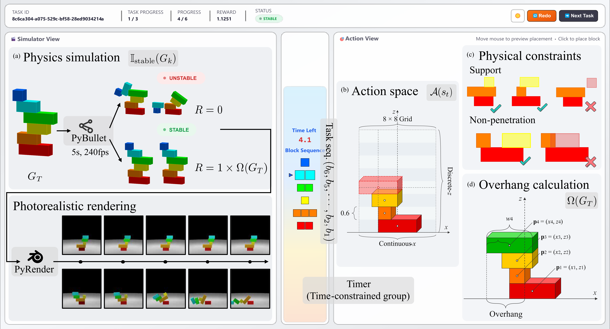
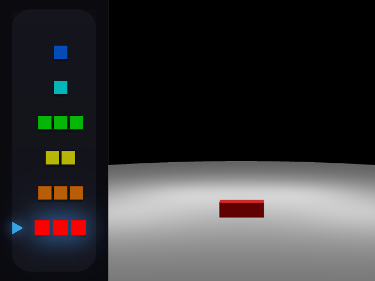
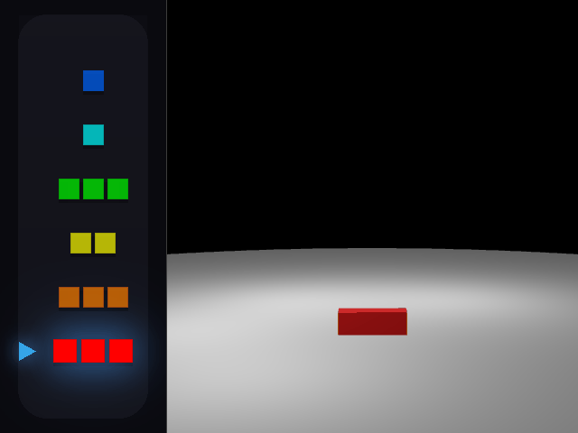
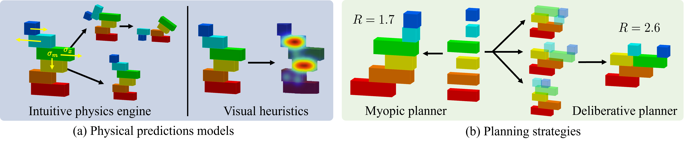
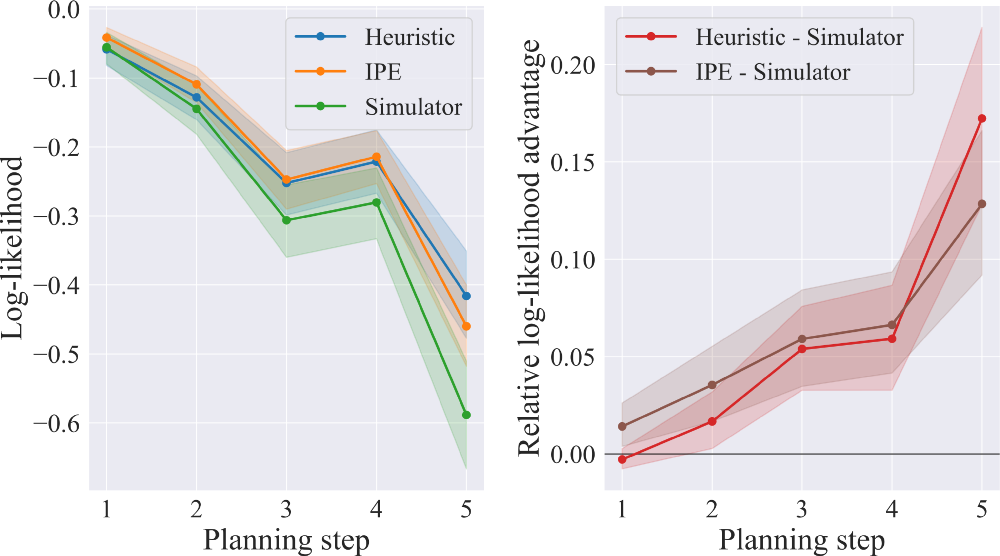
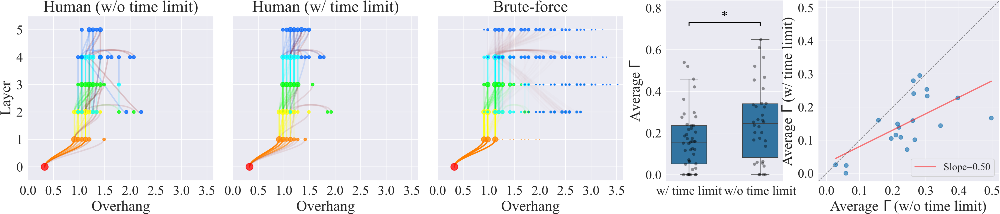

Humans effortlessly navigate the physical world by predicting how objects behave under gravity and contact forces, yet how such judgments support sequential physical planning under resource constraints remains poorly understood. Research on intuitive physics debates whether prediction relies on the Intuitive Physics Engine (IPE) or fast, cue-based heuristics; separately, decision-making research debates deliberative lookahead versus myopic strategies. These debates have proceeded in isolation, leaving the cognitive architecture of sequential physical planning underspecified.
Here we show that humans exhibit a dual transition under resource pressure, simultaneously shifting both physical prediction mechanism and planning strategy to match cognitive budget. Using Overhang Tower, a construction task requiring participants to maximize horizontal overhang while maintaining stability, we find that IPE-based simulation dominates early stages while CNN-based visual heuristics prevail as complexity grows; concurrently, time pressure truncates deliberative lookahead, shifting planning toward shallower horizons—a dual transition unpredicted by prior single-mechanism accounts.
These findings reveal a hierarchical, resource-rational architecture that flexibly trades computational cost against predictive fidelity. Our results unify two long-standing debates—simulation vs. heuristics and myopic vs. deliberative planning—as a dynamic repertoire reconfigured by cognitive budget.

The experiment employs a web-based, interactive 2D construction task in which participants arrange a sequence of 6 blocks on a continuous grid of size 8 × 8. Blocks are randomly drawn from three distinct shapes. Upon placement confirmation, the engine simulates dynamics via PyBullet to determine stability. Stable configurations yield a reward proportional to their overhang; any collapse results in zero reward. Simulated states are rendered into photorealistic visual feedback.
Unlike binary satisfaction tasks, the objective creates a continuous risk-reward trade-off: extending blocks shifts the center of mass toward the edge, progressively depleting the "stability budget." Optimal performance requires two distinct mechanisms:
The following task trajectories illustrate how human participants exploit these two strategies during experiemnts.


82 participants were randomly assigned to one of two between-subjects conditions: time-constrained (5s per placement) or unconstrained (unlimited deliberation time). Each participant completed 20 experimental trials.
We develop a computational framework that factorizes the planning process into two independent components: a physical prediction module that evaluates the stability of candidate configurations, and a planning module that expands the search space before committing to an action.

Intuitive Physics Engine (IPE): Estimates stability via Monte Carlo probabilistic simulation. For each candidate action, the model runs $K=50$ forward simulations with stochastic Gaussian perturbations to position, gravity, and friction, producing a probabilistic stability estimate. Computationally expensive but captures uncertainty from perceptual and dynamic noise.
Visual-Heuristic Model (CNN): Approximates physical prediction through visual patterns rather than explicit simulation. An Inception-V4 network maps rendered images of post-action geometry to stability probabilities, trained on 200k diverse configurations achieving 97.5% accuracy. Its representational cost remains roughly constant regardless of stack depth.
Myopic Planning: Selects each action based solely on its immediate expected value without anticipating how current choices constrain future possibilities.
Deliberative Lookahead: Imagines future trajectories before acting. At each decision state, the planner expands candidate action sequences up to depth $D$ and evaluates their cumulative utilities, enabling counter-weighting and scaffolding strategies.
Time constraints significantly reduced the optimality of successful solutions ($p < .001$) without compromising the overall success rate ($p = .484$), suggesting that under time pressure, humans adopt a risk-averse planning strategy, sacrificing potential reward to ensure stability.
| Metric | 5s Time Limit | No Time Limit | $p$-value |
|---|---|---|---|
| Total reward | 18.25 ± 0.57 | 19.57 ± 0.56 | .107 |
| Stable rate | 0.702 ± 0.025 | 0.678 ± 0.021 | .482 |
| Average overhang | 1.321 ± 0.023 | 1.460 ± 0.029 | <.001 |
| Decision time (s) | 2.47 ± 0.07 | 7.27 ± 0.88 | <.001 |
Gallery of human task trajectories
Both approximate models significantly outperformed the veridical baseline ($p < .001$), confirming that human intuitive physics systematically deviates from Newtonian mechanics. More critically, the relative explanatory power of the two mechanisms shifted systematically: in early stages, IPE exhibited a modest advantage; as scene complexity grew, the visual-heuristic model decisively outperformed IPE ($p < .001$). This crossover reflects a fundamental asymmetry in how the two mechanisms scale with structural depth.


We define Order Dependency ($\Gamma$) to measure whether a tower's final geometry can only be achieved through a precise causal construction sequence. Time pressure significantly reduced Order Dependency (Unconstrained: $\Gamma = 0.24 \pm 0.03$; Time-constrained: $\Gamma = 0.15 \pm 0.02$; $p = .022$). This reveals a qualitative shift: unconstrained participants constructed towers demanding precise sequencing, whereas time-constrained participants retreated to order-invariant heuristics.
| Model | Terminal Reward |
|---|---|
| Human (w/ time limit) | 0.913 ± 0.03 |
| Human (w/o time limit) | 0.979 ± 0.03 |
| Myopic | 0.52 ± 0.12 |
| Lookahead ($D=2$) | 0.912 ± 0.10 |
| Lookahead ($D=3$) | 1.180 ± 0.24 |
The myopic planner achieves a terminal reward drastically below human baselines. Extending the planning horizon reliably recovers performance. The correspondence between human performance under varying time constraints and models of different search depths suggests that time pressure truncates, but does not eliminate, deliberative lookahead.
We introduced Overhang Tower, a construction task probing sequential physical planning under risk-reward trade-offs. By manipulating time pressure, we tested whether humans adaptively shift both physical prediction mechanisms and planning strategies as cognitive resources vary. Our results support a resource-rational architecture at two levels: IPE-based simulation dominated early stages, whereas visual heuristics prevailed as complexity grew; concurrently, time pressure truncated deliberative lookahead toward shallower planning horizons.
These findings unify two previously isolated debates (simulation vs. heuristics and myopic vs. deliberative planning) as a dynamic repertoire reconfigured by cognitive budget. By treating humans as active, capacity-limited agents rather than passive observers, our framework offers a computational foundation for understanding physical problem-solving in the wild.
If you find our work helpful, please consider citing:
@article{shen2026overhangtower,
title={Overhang Tower: Resource-Rational Adaptation in Sequential Physical Planning},
author={Shen, Ruihong and Li, Shiqian and Zhu, Yixin},
year={2026},
}